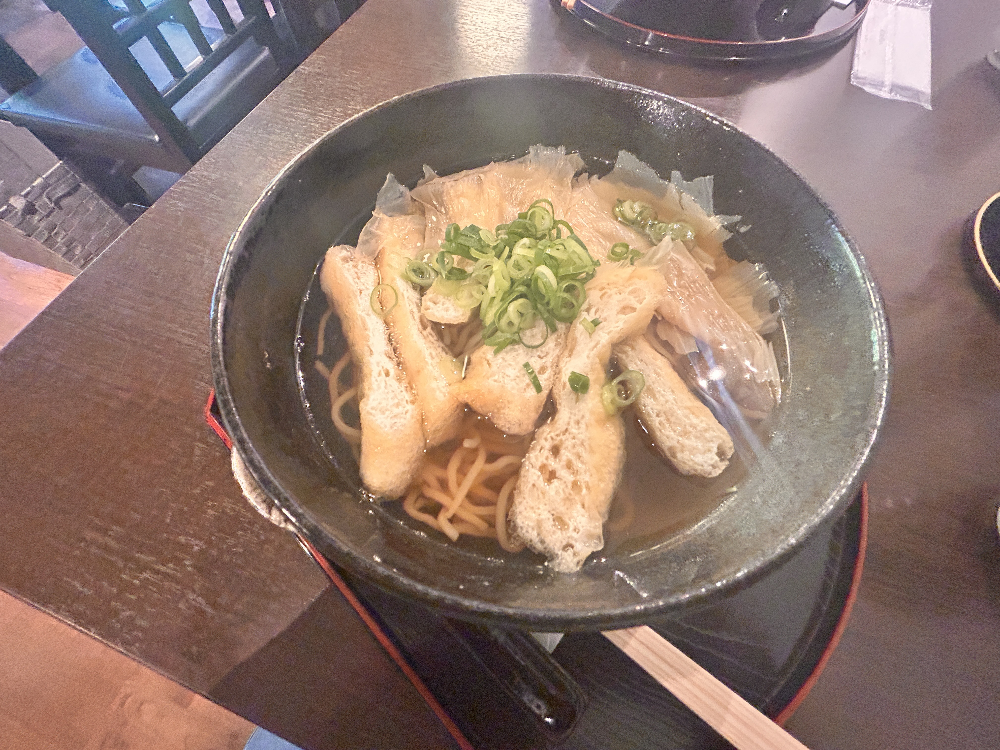

POSITIVITY!
2026.05.30
Hello blog.
Today I went to Yoshinoyama (mountain) with Lily-san today. She basically paid for my entire trip which was around $21 total. Wow, yen is so weak right now. I was thinking the entire time “this is so expensive.” Literally, it was $21 for a round trip train ticket (3hrs total spent on trains), a cablecar ride, the most delicious tofu ramen, a mango soy latte, and fun times climbing a mountain. That is incredible. I have to express that the tofu ramen was from a cafe that specialized in tofu/soy products. I would like to go back eventually because it was really good. Lily-san and I both got the same thing. Here’s a pic:

And here’s when we finally got to the top. It took a total of 2 hours to get there, but it was truly magnificent:
What I loved about climbing this mountain was how quiet it was. I never noticed it really, but there’s always noise in Osaka, or any city. I also liked that no one else was climbing except us. I’ve learned that I really love the Japanese countryside. I just love greenery, or 緑 in 日本語。
THANK YOU LILY-SAN FOR EVERYTHING! It was so fun and I want to climb one more mountain with her.
休み
Tomorrow, I have to take a break and rest, but first I have to be accountable and fess up to my wrongdoings: I overly judge myself. I think this may the root of why I judge others, why I am afraid to leave my dorm, how often I escape to Youtube and Instagram when my mind gets overwhelmed, why I feel uncomfortable in my skin. It’s because more often than not, and/or unnecessarily, I tell myself things that I “need” to work on. It’s sort of a torturous loop because I beat myself up over watching too much social media, then to make myself feel better after that brutal, self-induced mental pounding, I go back to social media. I berate myself for having some fat in some areas, and then I eat more food because I feel sad about feeling powerless even though I am simply a normal functioning body. In these cases, you need to listen to what your mind or body is trying to communicate. Insanity is doing the same thing and expecting different results or whatever Einstein said. Clearly, if I am continuing to have such negative thoughts about myself after so long and experiencing the same crash out, I need to try something else. I need to clearly communicate with myself. Maybe I can do positive affirmations or something. Okay, let’s do it! Reader, please join me on this positivity journey. I am going to pack my brain full of love. 行きましょう！
Utilizing the studies of University of Madison, Wisconsin, they detail the following process:
STEP 1: Identify negative thoughts
This I may do privately. Admittedly, a lot of what I tell myself is pretty hurtful, I wouldn’t tell anyone what I tell myself. God, I sound like a wannabe emo pick me. Ope, like right there. Here is one I am willing to share: “People don’t want to be around me.”
STEP 2: Reframe
“People enjoy being around me.”
STEP 3: Shorten
“People enjoy me.”
STEP 4: Creative words
“I am the party starter. I’m like a bass guitar.”
STEP 5: PRACTICE!
Starting out, I’ll tell myself 4 affirmations after I wake every morning. For my youngins, here’s a tip for building habits: begin extremely simple. For example, my goal for this blog is literally just to post anything. If you want to be a reader, read a page a day. I have been reading consistently since October of last year utilizing this method. Wait, I just checked and I’ve already read SIXTEEN BOOKS THIS YEAR? wow… that is actually crazy. I thought I read, like, 6. Anyway, the point is start small enough that you’re barely hindered by its difficulty. Eventually, it will feel strange if you don’t do it. Like, If I stopped posting, I would feel off. Though, the same concept goes the opposite way. If I stopped going on social media, I would feel strange. Alcoholics who stop drinking experience terrible symptoms, and sometimes can even die. Isn’t that crazy? We are creatures made for dependency, and sometimes that can result in our demise. This paragraph was about five tangents.
UGH, LAUNDRY.
When Lily-san and I were climbing the unknown mountain, I asked her what she was gonna do after we get back. She said that she has to clean her clothes, do the dishes, and clean her room, and as she was saying all this, I noticed she spoke with the same inflection that Emi-san and I had when we were complaining about having the fresh responsibility of doing laundry. Maybe there is never going to be an age when things get “easier.” Maybe things are just as difficult at any age. Well, that isn’t true actually because we are limited by our ever changing bodies. This is why you don’t listen to 19 year olds. That’s another negative thing I tell myself: “I’m 19.” WHY DO I HAVE TO BE SO NAIVE???
Tomorrow, I want to repeat the “reading as many books as I can” challenge. I really liked doing it, and it will keep me off of social media. Social media is not really a break since my mind is still stimulated. Okay blog. i love you. じゃね！